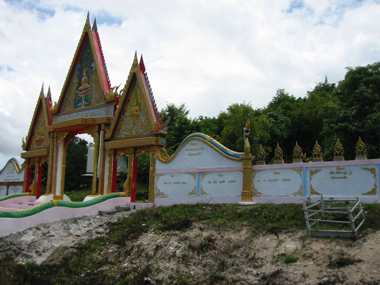
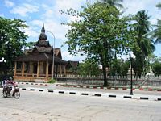
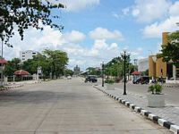
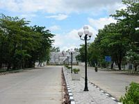
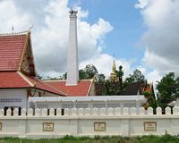
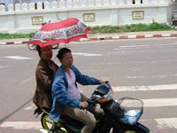
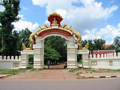
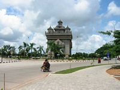
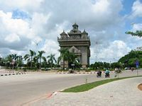
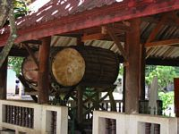
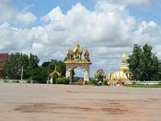
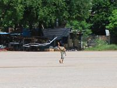
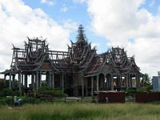
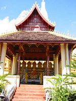
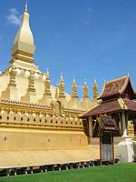
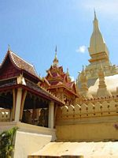
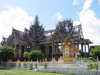
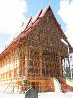
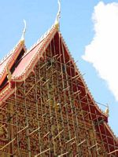
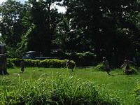
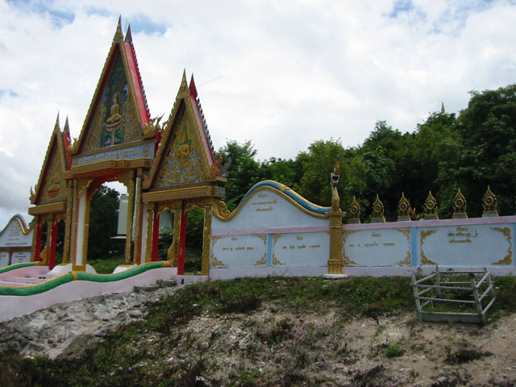
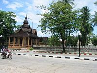
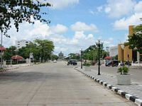
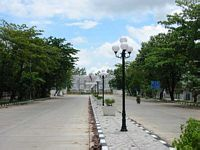
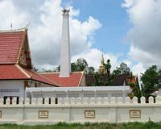
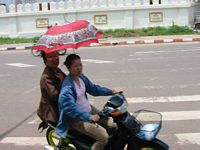
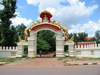
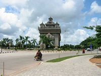
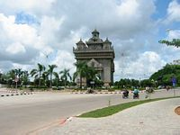
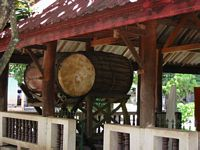
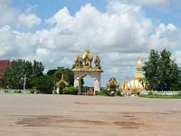
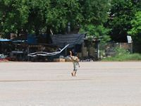
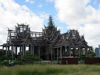
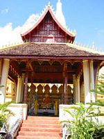
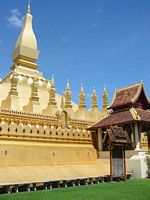
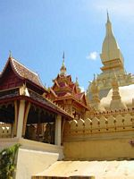
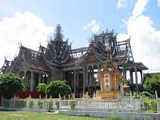
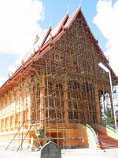
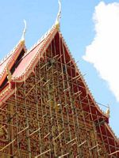
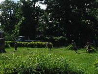vendredi 1er août
Des la sortie du bus, je me rue sur le premier moto-tuktuk (je pense que ça s'appelle comme ça), et j'explique la situation au chauffeur : je dois aller de toute urgence à la BCEL (Banque Commerciale E( ?) du Laos) pour retirer de l'argent avec ma carte visa : d'après le LP, c'est le seul endroit où je peux faire ce genre d'operations dans tout le Laos. Il m'ecoute poliment, puis fait demi-tour et retourne à la gare routiere ! Parfois je me sens si seul et incompris... Il appelle quelqu'un et me fait signe de recommencer mon explication : je m'execute et une traduction en lao plus tard, nous bondissons (autant que puisse bondir une vieille mobylette accrochée à une carriole) a notre destination. Le guichet est ouvert, je suis sauve ? Non, aucune banque laotienne ne peut faire de transaction Visa depuis le 5 juin. Et les banques thai sont fermées jusqu'a lundi. Je tente ma chance dans un hôtel de luxe (oui, nous pouvons prendre votre carte si vous prenez une chambre : 45$) et une agence de tourisme (nous fonctionnons avec les banques du Laos, desole). Je suis donc bloque sans un kip (j'ai donne tout ce qui me reste au moto-tuktuk). Finalement, je trouve une guest house comprehensive, ils acceptent que je paie à la fin du sejour, et en plus ils me prétént de lï¿1⁄2rgent pour le week-end. Elle s'appelle "Mimi Guesthouse" mais c'aurait tout aussi bien pu être "Hassan Cehef Guesthouse" ! Bref je suis sauve. Et comme j'ai très faim, je vais au restaurant indien. Il est 17h. Je rencontre une Hollandaise, Mareye (je crois que ça s'ecrit comme ça, c'est la traduction de Mireille en français). Elle est très sympa, psychologue et j'aurais bien fait un bout de route avec elle, mais elle remonte sur Luang Prabang demain matin et nous nous disons au revoir a 23h devant le restaurant.
samedi 2 août
Visite de la ville, je passe l'après-midi a lire, vue sur le Mekong, bref je suis bien. Pas un nuage. Tout-a-coup, le personnel du bar s'agite, ils rentrent les parasols. Et une minute plus tard, une bourrasque et le ciel devient noir de nuages : c'est l'averse facon mousson.
dimanche 3 août
Je parcours la ville jusqu'au ? ?, le plus beau wat de Vientiane. Sur le chemin du retour, je rencontre Kip et je tente ma premiere conversation en lao mime. Mais tout ce que j'ai, c'est la pauvre page "phrase-book" du LP, et la conversation tourne court. Je finis la ballade par le Morning Market.
lundi 4 août
Je suis a banque militaire thai des l'ouverture, et je peux enfin payer la GH, plus le petit pourboire de rigueur pour "service rendu".Un tuktuk plus loin, je suis à la gare routiere près du morning market. Des militaires partout, plusieurs personnes sont occupées a nettoyer un perimetre marque par une bande style "no trespassing - crime investigation". Un chauffeur de tuktuk m'explique la situation : une bombe vient d'exploser, au moins 6 blesses. D'après lui, les responsables sont les voisins thailandais qui voient d'un mauvais oeil l'afflux des touristes au Laos. Chacun voit midi a sa porte. Je monte dans le bus pour ? ?. D'après les renseignements de la Mimi guesthouse, je pourrai prendre un bateau de la jusqu'a la frontiere cambodgienne.
Une fois arrive dans le petit patelin, je prends un tuktuk et lui demande l'embarcadere. Devant son incomprehension, je dis le mot magique : "guesthouse". La ville n'est meme pas dans le LP, c'est plutot un village et ils ont l'air de voir rarement des touristes. Le chauffeur me descend à la GH, mais c'est trop cher. Entrétémps j'ai change d'avis : pourquoi ne pas partir aujourd'hui ? Je commence à le bombarder de questions, grace a mon phrasebook : "Ou se trouve le quai ?" "A quelle heure part le bateau ?" "Y a-t-il des bus pour Savannakhet ?" Il me repond a chaque fois en faisant non de la tété. C'est desesperant. Je relance une salve de questions, en redistribuant le accents toniques au hasard, esperant un declic, mais toujours rien. Je descends donc à la 2eme guesthouse, de toutes facons je ne pourrai rien en tirer. Le patron de la GH parle un peu anglais. J'apprends qu'il n'y a pas de bateau, mais que le bus pour Savannakhet passe dans une heure, sur cette route. C'est une bonne nouvelle. Je vais donc prendre un coca dans un boui-boui en face, et j'essaie de lier conversation avec les enfants. Et la je réalise mon erreur : je me suis trompe de page dans le LP, j'ai bassine le chauffeur du tuktuk avec du malais et non du lao, depuis le debut. Je repense a mon pauvre chauffeur de tuktuk, a qui je parlais de plus en plus fort dans une langue que ni lui ni moi ne connaissions ! Pas etonnant qu'il n'ait rien compris.
Le bus arrive, il est archibonde, j'arrive finalement a trouver une place dans le couloir central et je m'assois sur mon sac. Un Viet qui apprend l'anglais essaie de communiquer mais son accent est incomprehensible. Il finit par ressortir son cahier et me donne une page de notes de cours. C'est une liste de questions, style "anglais premiere année". Je retrouve mes classique :"ou habites-tu ?" "Comment t'appelles-tu ?", etc... Mais le questionnaire est bizarrement oriente, avec des questions comme :"Voulez-vous faire des heures supplementaires ?" "Pourquoi ne voulez-vous pas faire des heures supplementaires ?" "Qui est arrive en retard ce matin ?"
Nous arrivons a minuit et demie a Savannakhet, je me fais deposer par un tuktuk à l'hôtel ? ?, ou je negocie la chambre, de 4,5$ a 3,5$
Je demande où se trouve le centre, mais le lao me deconseille d'y aller la nuit. "A cause des chiens" me dit-il. Bon bon bon, je vais boire une petite biere ici, aucun probleme. Je finis la soirée a discuter avec un Anglais complétément bourre, qui a perdu son portefeuilles, et qui passe son temps a raler contre les Lao.
mardi 5 août
Un tout petit tour dans la ville assez fade, je visite un wat. Voila voila.Le bus pour Pakse : le chauffeur a été à la meme école que celui de Luang Prabang a Vientiane, mais je le soupconne d'avoir eu son permis haut la main : Il n'a pas decolle la main du klaxon de tout le voyage. En plus il doit avoir monte un systeme de retour son dans le car, le bruit est absolument etourdissant. A part ça, la route est agreable, les paysages de riziere, de maisons sur pilotis, de paysan(e)s a "chapeau chinois". A chaque arret, nous sommes assaillis par les brochettes de poulet ou de cafards grilles. Nous sommes a Pakse a 20h, je suis epuise et j'ai mal au crane.